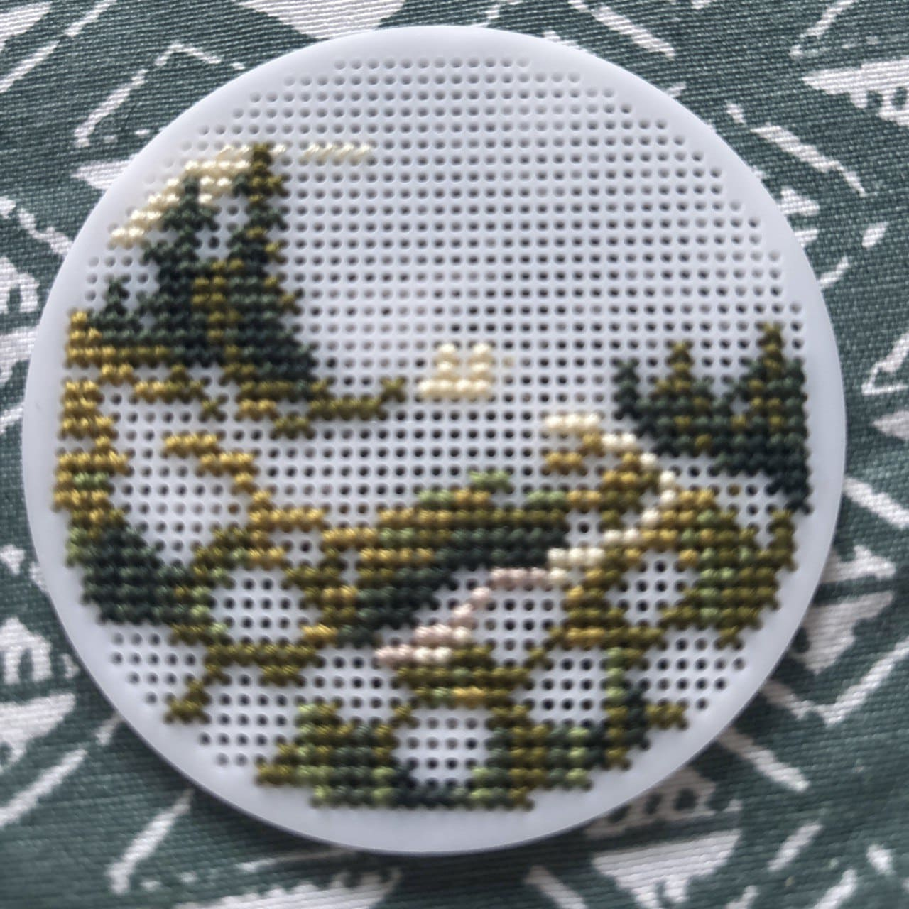
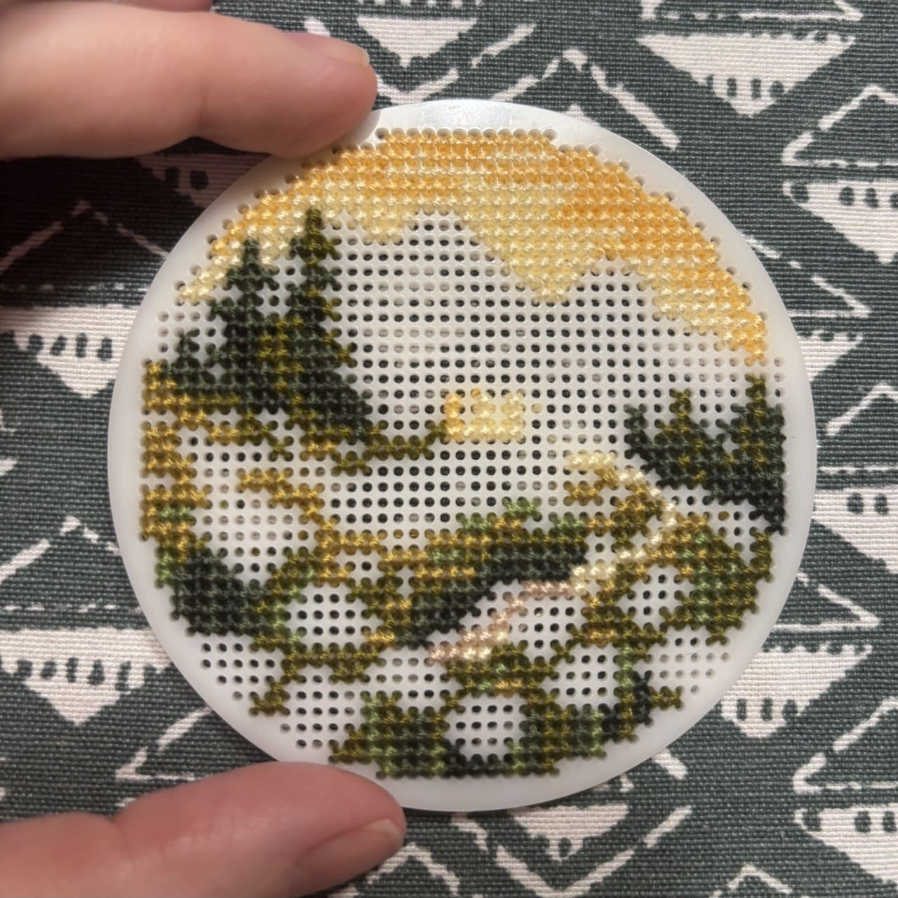
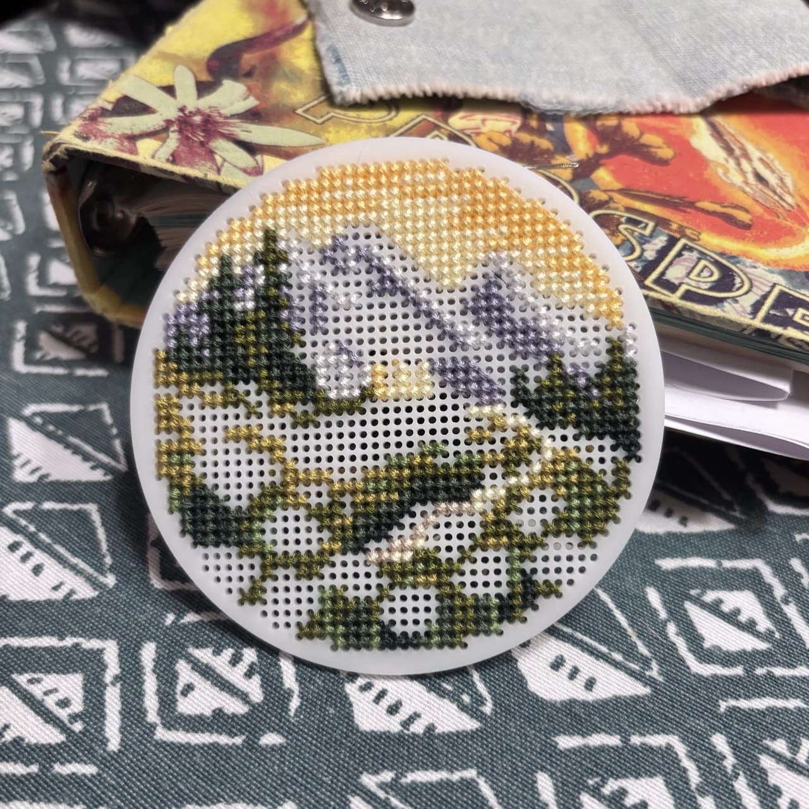
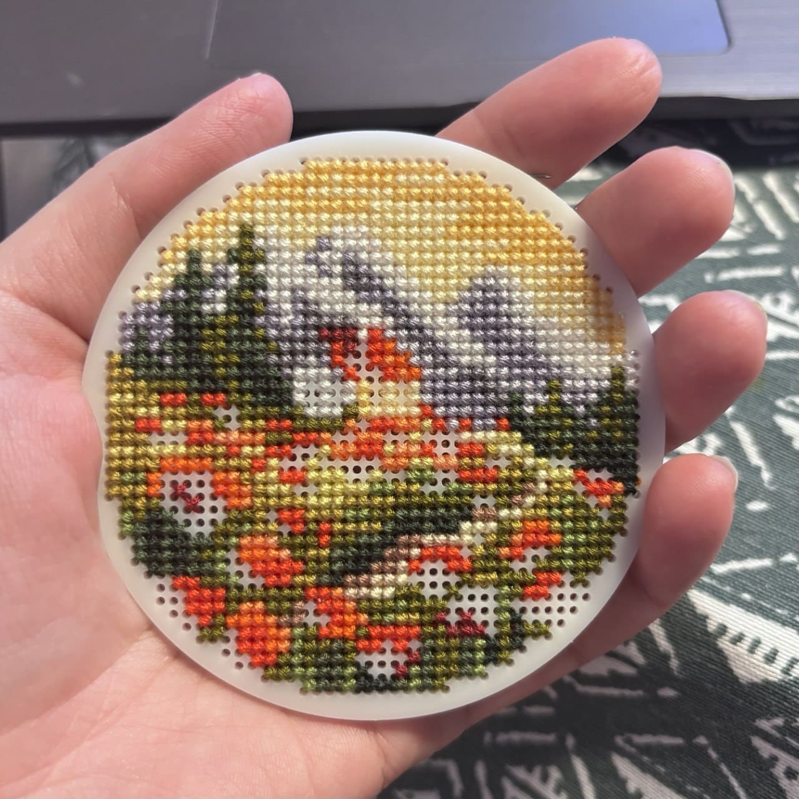
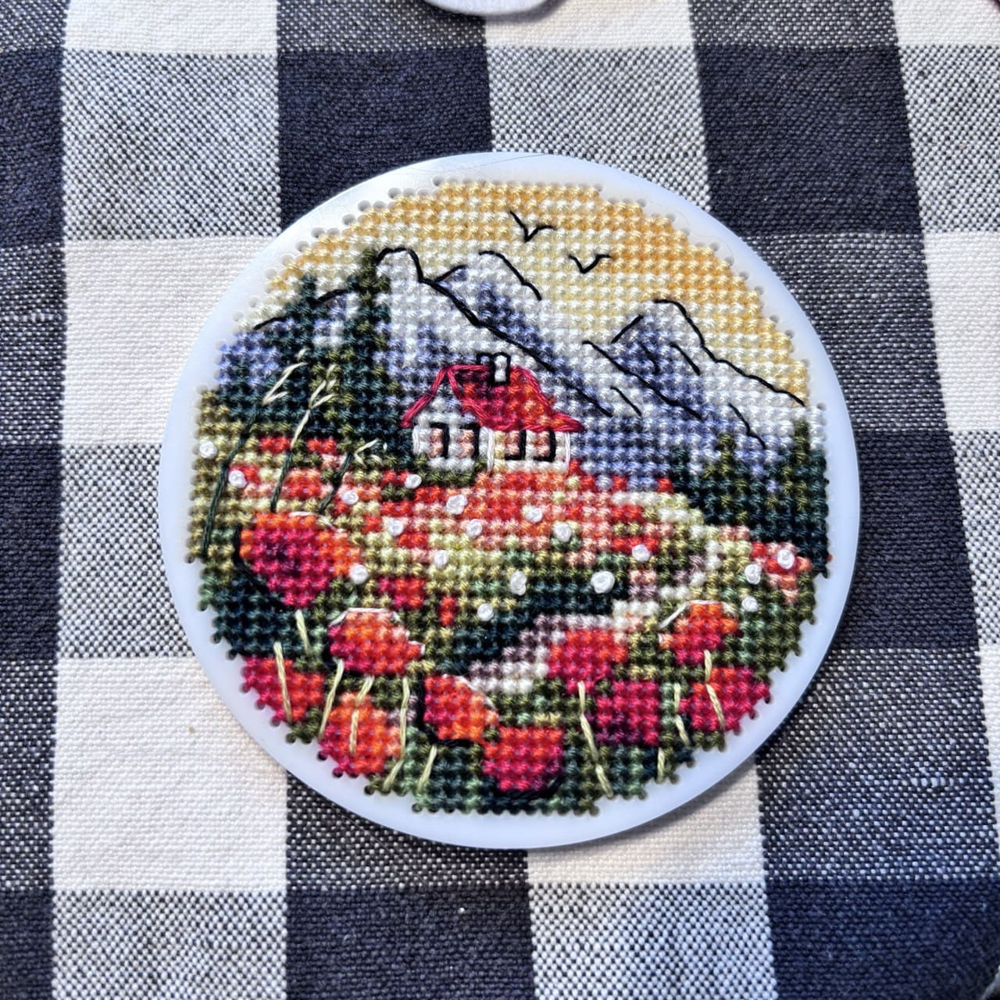
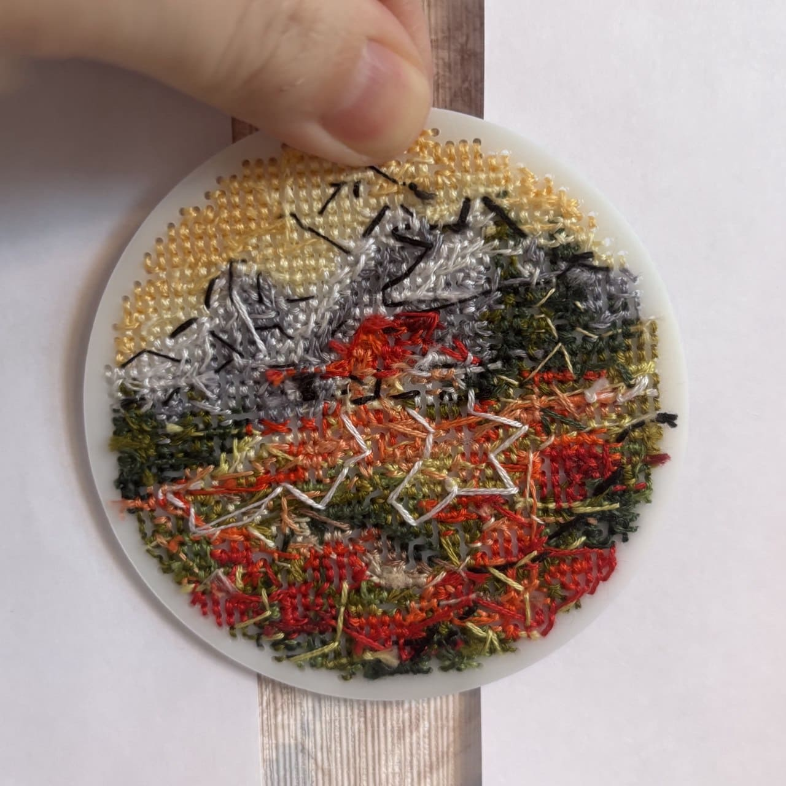
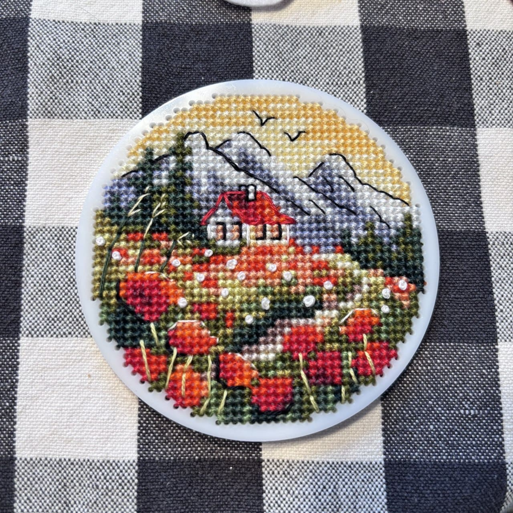

Это было самое начало пути. На этом этапе важно было проникнуться
основами и настроиться на учёбу. И, возможно, подумать, как новые
знания могут повлиять на ваше будущее.
Начало! только планы, ноль мыслей
1 спринт: Я — чистый лист

На первых этапах мы работали со страхами и сомнениями, которые часто
испытывают новички. Один из них — страх перед чистым листом. Это,
конечно же, намного сложнее, чем боязнь куска бумаги. Часто за этим
ощущением скрываются более глубокие вопросы: с чего начать? а вдруг
будет слишком сложно? что, если я не справлюсь?
Увлеченность! Это ново и очень интересно
1 спринт: А если не получится?

Первый проект — позади! Но это всё ещё самое начало пути. Радость
могла быстро померкнуть и смениться ожиданием провала. Или вы,
наоборот, могли вдохновиться успехами и поверить в себя.
Ура! получилось! даже не верится!
2 спринт: Погоня за идеалом

На этом этапе вы уже достаточно разбирались в основах вёрстки, чтобы
понять, как много ещё впереди. Вы могли попытаться погнаться за
идеалом и понять, что он недостижим. А, может, вы вовсе и не
подвержены перфекционизму и вместо того, чтобы сделать идеально,
старались просто сделать.
На этом этапе я точно не разобралась ещё в вёрстках и даже ни о каком
идеале подумать не могла.
2 спринт: О тех, кто рядом

Всё это время вы были не одиноки (хотя, возможно, иногда и
чувствовали, что одни против целого мира). Вас окружали одногруппники,
команда сопровождения и просто близкие люди, которым можно
пожаловаться, если очередной макет просто так не поддавался. Осваивать
что-то новое легче, когда рядом есть единомышленники, не правда ли?
Я так рада, что мы создали телеграмм-канал, где мы может неформально
общаться с односпринчанами! помогать друг другу и, главное,
поддерживать, когда ну совсем нет! ничего нет..
3 спринт: Обходные стратегии

На этом курсе вы постоянно решали разные задачи. В какой-то момент вам
могло показаться, что решения просто иссякли. Значит, пришло время
посмотреть на задачу под другим углом.
Третий спринт пошел относительно легко. быстрые и понятные темы про
адаптивность. Хорошая QA с наставником!
3 спринт: Когда опускаются руки

Во время учёбы часто возникает чувство, когда не знаешь, за что
хвататься. Вроде и проектную пора сдавать, и задачи хочется порешать,
и в теории получше разобраться, и жизнь не забыть пожить. В такие
моменты очень нужна концентрация. Вспомните, откуда вы её черпали.
Третья ПР началась с мата. Асолютно не понятно было, что откуда брать,
как работают кнопки переключения, как сделать резиновый сайт. Но села
и делала. Долго, с нервами, трепала односпринтян и наставника.
«Сейчас я здесь»

Сейчас вы уже очень много знаете о вёрстке. Но это только начало.
Во-первых, впереди ещё много материала про «красотищу». Во-вторых, с
окончанием курса учёба не заканчивается. Вёрстка — это целый мир. И
этот мир постоянно меняется. Познать его полностью не получится, но
это тот случай, когда важен сам процесс познания. Ведь часто путь — и
есть результат.
Сейчас я чувствую себя все еще шатко в html, но то, что начало
получаться в css я явно чувствую! неуверенность постепенно уходит.
Впереди долгий, сложный путь и новые горизонты!